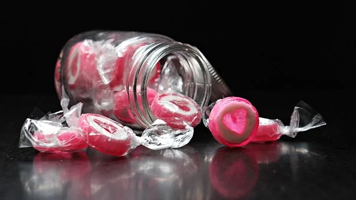
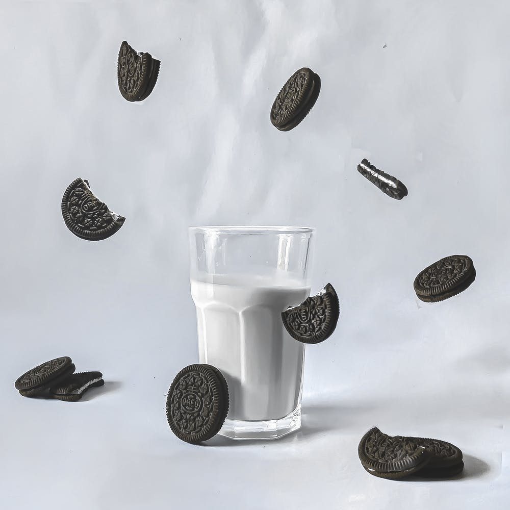
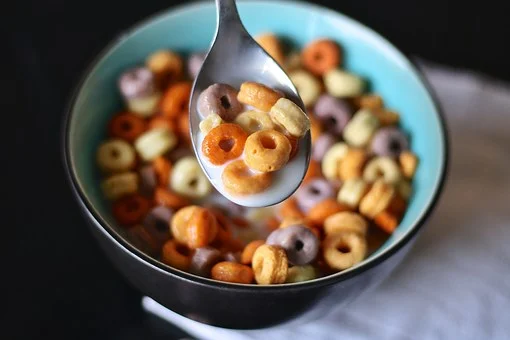

You probably remember when you were child and believed many in many wacky theories as aliens, santa claus and of course food. You probably heard of sugar kick, or that gum can stay in your stomach for 7 years is a lie. It is of course not true, and you should certainly not believe it, but I know that in this article you will find out about a fact you believed as a kid, which really wasn't true, and you still believe today.
Many believe that if you swallow bubble gum, the stickiness will stick in your digestive system. You could have heard it from your mom, dad or even your teacher. But the truth is that the gum gets digestive right after you swallow it. The gum can’t get decomposed by enzymes or other decomposers. The gum is just too flexible, so instead it just goes out of the digestive system. If you have other problems with swallowing gum, so click here to get more information, or talk with your doctor: https://www.mayoclinic.org/digestive-system
Even do candys or sodas are sugar free, it doesn't mean that everything about “sugar free” is better than original sugar . Yes it does (probably) not contain sugar, but it does contain artificial sweetener which could have a high range of acidity. For example citrus sugar free candies contain this artificial sweetener which could be as bad for your teeth as ordinary sugar. So next time you're gonna eat a full bag of sugar free drops, just think about Not consuming it all, even if you think it’s healthy and doesn't cause harm. And if you do, you may have to take a visit to your dentist.
Speaking of sugar, you probably remember that time when your parents said you can’t eat sugary treats before bedtime. And that you will get hyperactive and don’t fall asleep before countless hours. Well did you know that sugar kick is just a placebo of what you think it’s true. Yes, you get hyperactive because your brain responds to the thinking of eating sugar, which has a result of you thinking you are hyperactive. So you really don't get more active than you already are from eating sugar. Just remember to not eat too much sugar!
Many believe that oreo cookies are 100% vegan, and are perfect for vegans and for those who are kosher as a tasty treat. Because it doesn’t contain any dairy products, or animal fat. But not all of it is true. Oreos can have a cross-contacted small amount of milk, which means that the oreos can have come in contact with other equipment while baking the cookies. If you want 100% vegan oreos, then you probably have to take a trip to your kitchen and bake some.
You can’t eat something off the ground within five seconds and think just fine. Actually, anything you drop on your kitchen floor becomes contaminated with bacteria within milliseconds. If you drop something just give it a little wash, and if you think it’s clean you could eat it.
When you're doing a pantry cleanout and discover a plastic bear-shaped container of honey that's been hibernating in a corner for years, you might be tempted to toss it. But, hoy doesn't actually expire! When it's properly stored in sealed containers, it can remain stable for centuries, according to the National Honey Board. The honey is also too dense to let other bacteria decompose. However, it might crystallize or lose some of its aroma and flavor over time, so that's why you may see an expiration date.
Many people believe you can tell if a food is safe to eat by giving a good look or even sniffing it. But dangerous germs like E. coli or Salmonella won't cause your food to look or smell different.
Many believe that cereal doesn't get expired because of their dry texture, which doesn't let any bacteria in. Well technically that is true, cereal can still be decomposed by fungus, or other decomposers. Cereal has an expiring date of 6-12 months, and loses most of its flavour. Cereal which is ready to eat can last about 2-3 days until the fungus arrives.
It's a Toucan Sam Scam! You'd think those multicolored loops would have varying flavors that match their colors. But, nope! They're all the same "froot" flavor. Food Beast confirmed this with a blind taste test and concluded the loops "taste like mildly sweetened cardboard, with negligible or no differences between them." The same goes for Fruity Pebbles and Trix.
Technically, white chocolate isn't chocolate. It's made with sugar, milk products, vanilla, cocoa butter, and lecithin, but doesn't have chocolate solids. To be labeled white chocolate, though, it must have at least 20 percent cocoa fat, according to the Food and Drug Administration's requirements. Even most of the world famous chocolate companies such as Nestlé, twix and Mondelez, even use most of the ingredients as white chocolate. The reason is because the cocoa beans which are used to make the traditional chocolate we know today, were too expensive. So instead chocolate factories made cheap affordable chocolate which uses some similar ingredients as white chocolate.